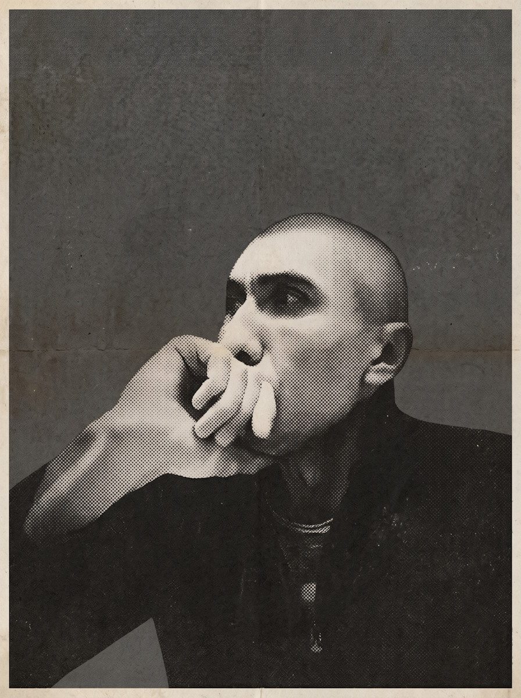

Автоматизация рутины и сложных задач для вашего бизнеса
проектирую и довожу до промышленной эксплуатации
Более 25 лет в коммерческой разработке ПО для задач бизнеса —
от десктопных приложений и служб до распределённых систем обработки документов.
С 2025 года — ИИ-помощники и агенты в разработке и тестировании
как часть повседневного процесса.
ФОРМАТ 1:1 · НОВОСИБИРСК

МАСШТАБ 1:1 000 000Рис. 1 — исполнитель
Коммерческая разработка
25+ лет
Платформа · пиковая нагрузка
1 000 000 док/сутки
Печать АвтоВАЗ
~250 устройств
ИПД · проверка 100–300 стр.
<1 мин
РАЗД. 01
Технологии
применяемый инструментарий
Языки и платформы
C#/.NET 8 и 10ASP.NET CoreGroovyPythonJSWPFWinFormsasync/awaitмногопоточностьRegEx
Данные
PostgreSQLTantorMS SQL ServerMySQLпартиционированиехранимые процедурыоптимизация БДплан выполненияSQL без ORMXMLJSON
ИИ-агентыLLMNER · DeepPavlovFineReader EngineFlexiCaptureOCRTesseractYandexVisionDoclingOpen XML SDKнечёткое сравнение текстапарсинг и анализ данныхсложные формыклассификация документовпотоковая обработкаDOCXXLSXPDFODTCSV
ESV Platform. Платформа распределённой обработки документов
Кластер узлов с балансировщиком нагрузки, задачи и workflow в БД на выбор
(MS SQL, PostgreSQL, Tantor), контроль heartbeat, горячий резерв. До 1 000 000 документов в сутки.
Непрерывная потоковая обработка документов разных видов: счета, договоры, пакеты документов, сканы, чертежи и другие. Приём из различных источников — сетевые папки, почта, FTP, WebDAV, SharePoint, брокеры сообщений. Полный цикл обработки: распознавание, классификация, поиск и извлечение данных, экспорт результатов в требуемые форматы. Ключевые требования — отказоустойчивость и масштабируемость под переменную нагрузку.
Решение
Распределённый кластер на .NET с БД на выбор — MS SQL, PostgreSQL, Tantor. Ядро — балансировщик нагрузки с резервированием (один активен, остальные ждут): он же назначает задачи узлам по мере движения документа по workflow — на узел, где есть нужный модуль и меньше очередь. Узел обработки — процесс-менеджер с пулом модулей; задачи вычитываются последовательно или параллельно, в зависимости от того, поддерживает ли модуль многопоточную обработку. Модули трёх типов: входные — регистрируют документ в БД для нужного workflow; обработки — выполняют стадии и передают документ дальше по маршруту; сервисные — фоновые задачи без привязки к workflow. Модули импорта можно резервировать. Система кроссплатформенная: узлы работают на Windows и любом Linux с .NET; для стадий ручной проверки есть веб-модуль верификации.
Результат
В разработке с 2014 года, в промышленной эксплуатации — с 2015-го. Пиковая нагрузка — до 1 000 000 документов в сутки. Система постоянно улучшается и дополняется новым функционалом.
P-02с 2023 архитектор, разработчик
ДИТ Москвы. Система интеллектуальной проверки документов (ИПД)
Конвейер на Astra Linux: документ на 100–300 страниц проверяется обычно меньше чем за минуту.
LLM + NER (DeepPavlov), нечёткое сравнение текста.
Astra LinuxDeepPavlovLLMNERнечёткое сравнение текстаOpen XML SDKREST API
статус: в промышленной эксплуатации
спецификация · запрос / решение / результат
Запрос
Две большие задачи. Первая — в больших документах находить все упоминания нормативных правовых и технических актов (НПА/НТА), проверять их корректность и актуальность, выполнять дополнительные проверки формулировок и оформления; результат — детальный и сводный отчёты по документу. Вторая — сравнение документов одного проекта (ТЗ, ЧТЗ, ПМИ, заявки, протоколы) между собой на консистентность и корректность, а также проверка уникальности ТЗ и ЧТЗ разных проектов; по каждому сценарию — детальные и сводный отчёты о найденных несоответствиях, дубликатах и пропусках.
Решение
Отдельная версия платформы распределённой обработки документов со своими модулями. Кластер на Astra Linux. Поиск сущностей — NER на DeepPavlov; анализ структуры документа и последующая работа с ним — на Open XML SDK. Детальные отчёты — проблемные участки выделяются цветом прямо в исходном документе, с комментариями. Сравнение структур и содержимого — авторские алгоритмы нечёткого поиска либо LLM там, где нужно сравнить смысл при сильно различающихся формулировках. Для пользователей — веб-фронтенд и REST API.
Результат
Типовой сценарий — документ на 100–300 страниц проверяется меньше чем за минуту: NER работает на GPU, активное участие LLM не требуется. Особо сложные сценарии анализа могут занимать 5–10 минут.
P-032024–2025 архитектор, разработчик
АвтоВАЗ. Система гарантированной печати
~250 устройств: RabbitMQ с очередью на каждое, SNMP-контроль до и после печати,
печать по LPR/IPP/RAW, этикетки с RFID.
Замена существующего CUPS-сервера. В производственных линиях критичны гарантия печати и чёткая последовательность заданий — прежнее решение этого не обеспечивало. Второй ключевой критерий — скорость обработки: не ниже 60 заданий печати в минуту на разные устройства.
Решение
Задания формируются как шаблоны с данными в JSON и через RabbitMQ попадают в общую очередь, где диспетчер распределяет их по узлам обработки. Узлы готовят бинарные данные под конкретное устройство печати (отправка по LPR/IPP/RAW) и передают их в отдельную очередь этого устройства. Узел печати — многопроцессное многопоточное решение — мониторит очереди всех устройств, опрашивает их по SNMP до готовности и проверяет, что задание напечаталось, по нескольким критериям; только после этого печать считается успешной. Есть резервные устройства и перенос очереди печати между устройствами, отдельные очереди команд для управления. Всё регистрируется и логируется в PostgreSQL — для таблиц с миллионами записей включено партиционирование. Поддерживаются разные модели и типы устройств: лазерники, термопринтеры. Сбои нотифицируются в управляющее приложение и на почту. Система собрана и работает в Deckhouse; в комплекте — WPF-приложение для тестирования, веб-админка и вывод заданий печати на телевизор.
Результат
Нагрузочное тестирование с запасом покрывает требования по скорости обработки и печати. Система сдана на конвейер и работает в промышленной эксплуатации.
РАЗД. 03
Опыт работы
по датам поступления
01.2023 — наст. вр.
Частная практика (ИП)
Ведущий разработчик C#/.NET, архитектор — заказная разработка для промышленных и государственных заказчиков
01.2019 — 12.2022
ABBYY, Новосибирский филиал
Руководитель группы сопровождения инфраструктурных сервисов; с 09.2019 — директор филиала (по совместительству)
03.2001 — 12.2018
АТАПИ Софтвер (партнёр ABBYY)
От стажёра до руководителя отдела исследований и разработок (2010–2018)
РАЗД. 04
О себе
примечания к листу
НГТУ, 2001, АВТФ («Автоматика и управление в технических системах»).
Английский — C1. Сертификаты: Microsoft MCPD (.NET Framework), MCP (MS SQL Server), Naumen Service Desk.
Вне работы — кино, кулинария, книги, велосипед; МС по стрельбе из лука и
КМС по пауэрлифтингу — привычка к точности и методичной нагрузке.